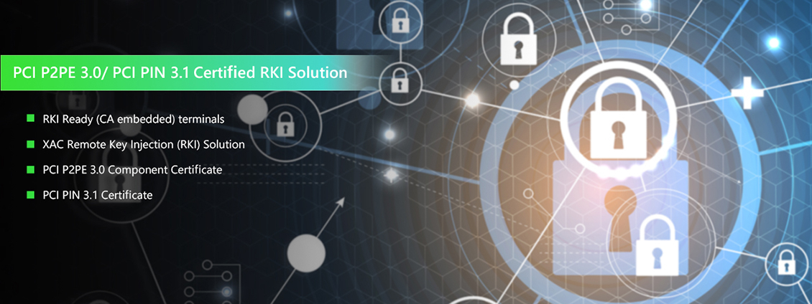

XAC Remote Key Injection (RKI) Solution

XAC Remote Key Injection Solution is a PCI P2PE 3.0/PCI PIN 3.1 Certified and one stop RKI Solution. From CA Injection when terminal production, RKLD for Key Import, Key Generation, to Key Deployment , all can be done through XAC Cloud TMS II system to reach truly Server-Less instead of setting up a server in-house plus adding HSM.
PCI P2PE 3.0/PCI PIN 3.1 Certified
XAC P2PE 3.0 includes CA/KIF/RKI Component certificates. And XAC PCI PIN 3.1 certificate includes:
- Remote Key Distribution Using Asymmetric Keys – Operation
- Certification and Registration Authority Operations
- Key-injection Facilities
CA Injection during Terminal’s Manufacturing Process
XAC's RKI solution is to let CSR directly connect to XAC CA server in XAC factory within manufacture process. No need to have a stop for connecting to extra bridge server for bypass device CSR to 3rd party’s server. This can save a lots production time and other possible cost.
Physical Key Loading Device
Unlike other RKI solution providers that only use web portal way, XAC RKI solution is to provide another Physical Key Loading Device. This Physical Key Loading Device is handled by the key owner and stored in the existing secure room and only be exposed when performing key generation & uploaded.
Leverage XAC TMSII’s Server-Less Advantage on Key Distribution
By leveraging XAC TMS II as a key package distribution system, users can schedule a specific time and group of devices to receive replacement key packages. Customers do not need to spend extra money to set up a bridge server locally and do not need to spend extra time on related communication between the bridge server, device, and host.
By above unique advantages, XAC P2PE certified RKI solution can provide the Most Cost Effective way and help our customer to get below operation cost saving benefits:
- Key replacement required on XAC devices deployed in the field.
- No need to return the devices back to warehouse
- No need to perform injection inside PCI approved secure room, devices can get key replacement package once it online.
For more information, please contact marketing@xac.com.tw